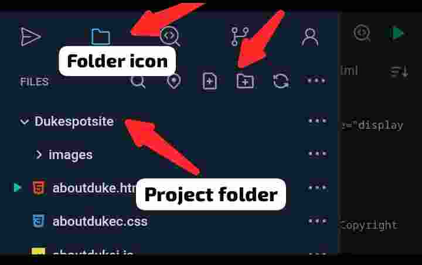

Pushing updates to GitHub from an android phone gives a very big advantage to the user, this process can be easily done using SPCK editor.
Once installed you can simply create and push a project file from your phone by following these steps:
-
Sign In To SPCK editor using GitHub:
Navigate to the sign in bar and click on the GitHub option

-
Create or import your project file
Click on the projects folder and click create or import new project
 -
Create a new repository (If needed)
login to your profile at the GitHub website at github.com and create a new repository for your project. (Make sure your browsing in desktop mode).
Note: if there is an existing repository for your project, you don't need to create a new one.
-
Add new remote :
Go back to SPCK editor, open your project and click on the branches icon

Select "remote" and add a remote by copying the link of your repository and naming it.
-
Push the File:
Click on the "branches" icon and click commit.
Once it has been commited, click on "push". You will be prompted to select the remote repository, make sure its on the main branch and click "OK".